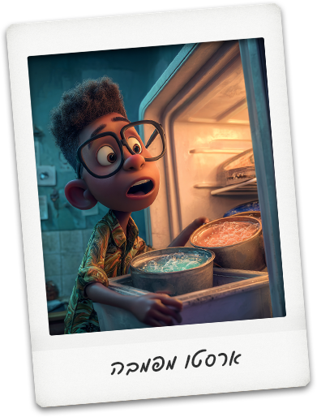
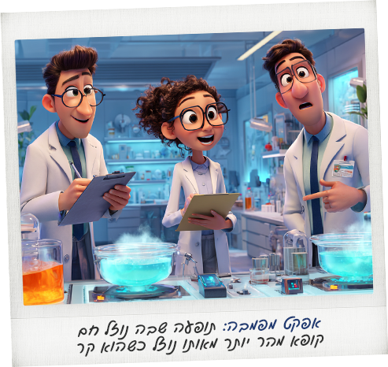
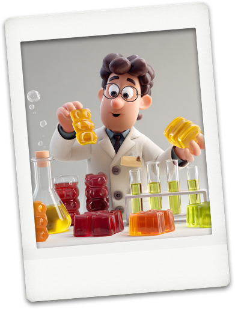
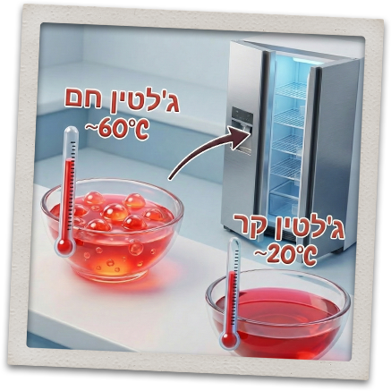
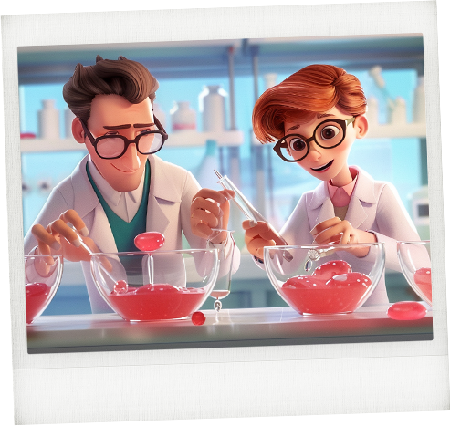
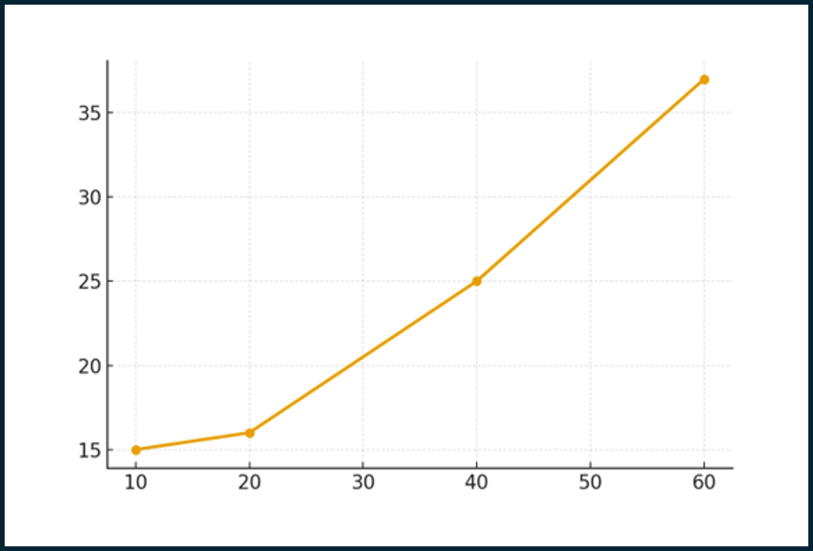
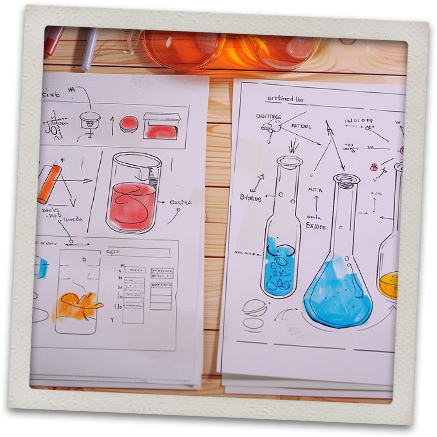
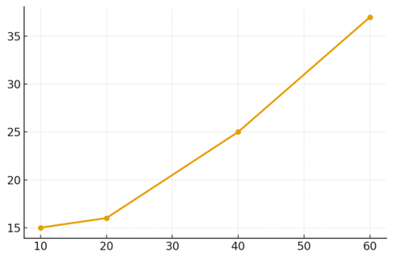
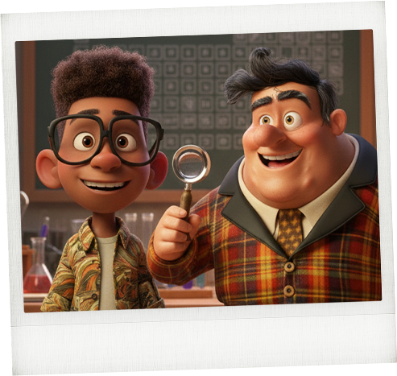

משימת הערכה מסכמת
לפני יותר מאלפיים שנה הבחין אריסטו בתופעה מסקרנת:
לעיתים מים חמים קופאים מהר יותר ממים קרים!
תופעה שנראית כמעט הפוכה לשכל הישר.
במשך השנים היא נשכחה, עד שבשנות ה-60 תלמיד תיכון מטנזניה בשם אֶרַסְטוֹ מְפֶּמְבָּה גילה תופעה זו מחדש במקרה, כשניסה להכין גלידה.
הוא הכין שתי תערובות: לאחת נתן להתקרר, ולשנייה לא, והכניס את שתיהן בו זמנית למקפיא. לתדהמתו גילה שהתערובת שהייתה חמה יותר לפני ההכנסה למקפיא קפאה מהר יותר מהתערובת שהייתה קרה יותר. מניסויים חוזרים נמצא כי התופעה מתקיימת במגוון חומרים במצב נוזלי.
התופעה (אפקט, Effect) נקראת על שמו - אֶפֶקְט מְפֶּמְבָּה.

זוהי הדגמה של אפקט מפמבה:
כשמרתיחים מים ומשליכים אותם לאוויר כאשר הטמפרטורות בחוץ נמוכות ממינוס עשרים מעלות צלזיוס (−20°C), המים באוויר הופכים לגבישי קרח באופן מיידי. תופעה זו לא מתרחשת עם מים קרים באותם תנאי סביבה.
בחרו את הנימוק המדעי המסביר מדוע אפקט מפמבה לא הגיוני לכאורה.
למרות הספקות וחוסר ההיגיון לכאורה, מפמבה התעקש לבדוק את התופעה לעומק וערך ניסויים שהראו כי היא חוזרת שוב ושוב. העובדה שנער צעיר מטנזניה הצליח להטביע את שמו על תופעה מדעית בינלאומית – "אפקט מפמבה" – ממחישה את ערכה של חשיבה עצמאית, תעוזה מחשבתית והתמדה, ומהווה השראה לכך שהמדע פתוח לכל מי שסקרן ונחוש.
בהמשך היה מפמבה שותף לכתיבת מאמר מדעי* על התגלית,
ומאז נושאת התופעה את שמו.
עד היום חוקרים סבורים שהיא מתרחשת רק בתנאים מיוחדים, אך אין לה הסבר מוסכם אחד.
* Mpemba, Erasto B. Osborne, Denis G., Cool?, Physics Education (Institute of Physics) 4: 172–175 (1969)

לפניכם משפטים המתארים תוצאות בלבד.
איזה משפט מתאר תוצאה ממנה ניתן להסיק כי התופעה מתרחשת רק בתנאים מיוחדים?
החלטתם לנסות ולהיות "מפמבה 2", ולתכנן ניסוי הבודק האם התופעה המוזרה
מתרחשת בנוזל נוסף. החלטתם על ג'לי למאכל!
אופן ההכנה של ג'לי למאכל:

אתם מתכננים ניסוי כדי לבדוק האם אפקט מפמבה מתקיים גם בג׳לי למאכל.
השערת המחקר שלכם:
"ככל שהטמפרטורה ההתחלתית של הג׳לי גבוהה יותר – כך זמן ההתמצקות יהיה קצר יותר."
מדוע חשוב לנסח השערה שמראה על קשר ברור בין הגורם המשפיע לגורם המושפע?
כיצד תתכננו את הניסוי הבודק האם 'אפקט מפמבה' מתרחש גם בג'לי?

במדע, בקרת עמיתים היא תהליך שבו חוקרים אחרים בודקים את העבודה שלך – את שיטת הניסוי,
את התוצאות ואת המסקנות – כדי לוודא שהמחקר נעשה בצורה אמינה, מדויקת ונטולת טעויות.
רק ממצאים שעוברים בקרת עמיתים ומאושרים על־ידי חוקרים נוספים נחשבים לידע מדעי מהימן.
לאחר ביצוע הניסוי מצאתם שבניגוד להשערתכם, הג׳לי החם דווקא התקשה מהר יותר מהקר -
תוצאה המזכירה את אפקט מפמבה.
כשפרסמתם את התוצאות באתר של תלמידים חוקרים, מספר קוראים הגיבו לניסוי וטענו שהם ניסו את אותו ניסוי בבית, אך לא קיבלו את אותן התוצאות.
מהי הדרך המדעית הנכונה להתמודד עם מצב כזה?

לפניכם גרף של תוצאות הניסוי לבדיקת אפקט מפמבה אותו שיחזר חבר שלכם בסקוטלנד: בדיקת השפעת טמפרטורת הג'ל בעת הכנסתו למקפיא על משך זמן ההתמצקות במקפיא.
גררו את רכיבי הגרף למקומם הנכון בתרשים.

איזו מסקנה ניתן להסיק מתוצאות הניסוי המוצגות בגרף בשאלה 6?


האם ממצאי הניסוי החדש של חברכם מסקוטלנד מתאימים לממצאים של מפמבה, או סותרים אותם?
בחרו את התשובה הנכונה:

אז מי צודק — מפמבה או ידידכם מסקוטלנד?
כאשר ניסוי אחד מראה תופעה מעניינת וניסוי אחר אינו מצליח לשחזר אותה, זה לא אומר שהתופעה "לא נכונה" — אלא שהיא עשויה להתקיים רק בתנאים מסוימים.
במדע שואלים: האם התופעה מתרחשת, וגם: באילו תנאים היא מופיעה.